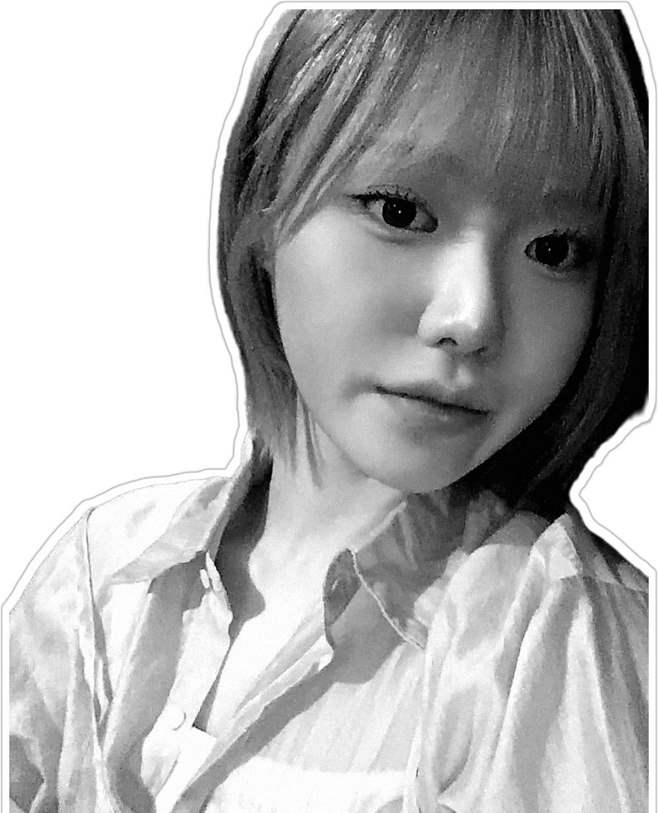

MAISONde idHAIRNEW FACES
NEW FACES · PARTNER
민
주

UNFILTERED
NEWFACE
민주PARTNERJOINED 20○○.○○
○ 일할 때 이렇게 해 주면 좋아요
알잘딱깔센
✕ 일할 때 이렇게 하면 싫어요
똑같은 질문 여러 번 해서
똑같은 대답 계속하게 만들기
Q. 피드백은 이렇게
둘이서만 있을 때 해 주세요
Q. 좋아하는 칭찬 스타일
어느 부분에서 어떤 게 괜찮았는지
세세한 칭찬이 좋아요
신입 파트너에게 한마디화이팅!
MAISON · VOL.01 · NEW PARTNER ISSUENEW FACES · 민주